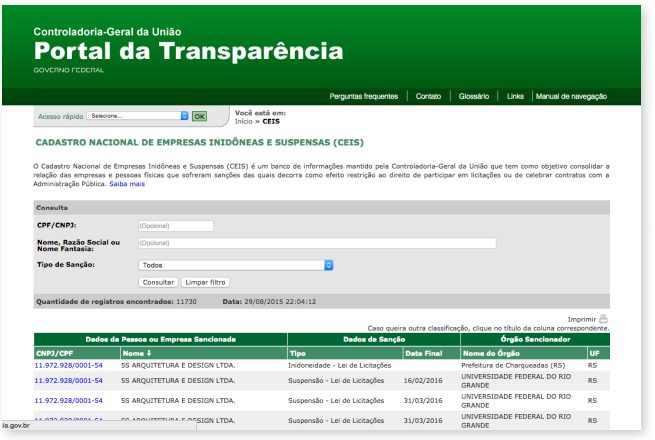
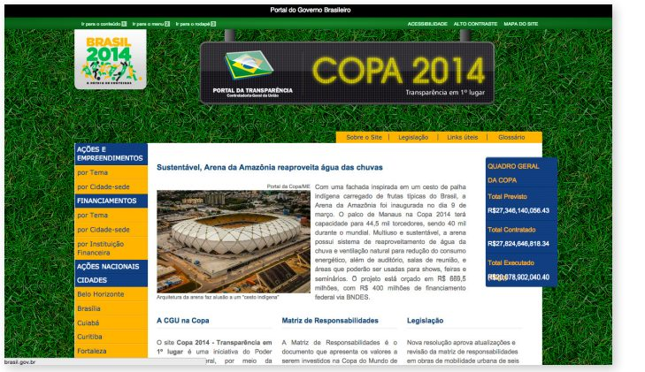

در سال ۲۰۰۴، دفتر کل شرکتکنندگان برزیلی (CGU) درگاه شفافیت را ایجاد کرد، ابزاری که هدف آن افزایش شفافیت مالی دولت فدرال برزیل از طریق داده بودجه باز دولت است. درگاه شفافیت که با مشارکت خدمات پردازش داده فدرال توسعهیافته است، بر همکاری وزارتخانهها و نهادهای مختلف مدیریت دولتی فدرال برای پیشبرد شفافیت و ارائه ابزاری که مشارکت شهروندان را تحریک میکند، تکیه میکند. از آنجا که کیفیت و کمیت دادهها در این درگاه در طی دهه گذشته بهبود یافتهاست، درگاه شفافیت اکنون یکی از ابزارهای اصلی مبارزه با فساد کشور است که به طور متوسط هر ماه ۹۰۰۰۰۰ بازدیدکننده منحصربهفرد را ثبت میکند. این پروژه به عنوان یکی از مهمترین طرحهای دولت الکترونیک با توجه به کنترل هزینههای عمومی در نظر گرفته میشود. دولتهای محلی در سراسر برزیل و سه کشور آمریکایلاتین طرحهای شفافیت مالی مشابهی را پس از درگاه شفافیت برزیل مدلسازی کردهاند.
- اقدامات دادهباز میتوانند به کشف هزینههای غیرقانونی یا غیرمسئولانه دولت کمک کنند، شهروندان را در کمپینهای ضد فساد دخیل کنند و منجر به تغییرات معنادار سیاست عمومی شوند که ممکن است بدون خشم عمومی ایجاد شده توسط افشای اطلاعات رخ ندهد.
- کانالهای ارائه و دریافت بازخورد ناشناس، روش مهمی برای تکمیل پایگاهدادههای دولتی موجود، به ویژه آنهایی که بر فساد تمرکز دارند، هستند. افشای اطلاعات یک پلتفرم برای به اشتراکگذاری اطلاعات میتواند منجر به دادههای فساد جامعتر شود - اگرچه خطر مثبت کاذب نباید نادیده گرفته شود.
- برخی از اطلاعات، مانند دادههای دقیق مرتبط با بودجه، ممکن است نیاز به سطحی از ترجمه داشته باشند تا برای شهروندان متوسط از نظر دسترسی و درک تکنولوژیکی، حقیقتا قابلدسترس و مفید باشند. البته تلاشهای بیشتری باید صورت گیرد تا اطمینان حاصل شود که هر گونه اطلاعات مالی قابلشناسایی شخصی قبل از اینکه علنی شوند، ناشناس میشوند.
۱. پیشینه و زمینه
فساد در برزیل
برزیل نیز مانند بسیاری از کشورهای موجود در این مجموعه، مدتها است که از فساد رنج میبرد. این کشور در میان ۱۷۵ کشور عضو شاخص ادراک فساد سازمان شفافیت بینالمللی در سال ۲۰۱۴، در رتبه ۶۹ قرار دارد. این شاخص همچنین گزارش میدهد که سیستم قانونی کشور «گرفتار ناکارآمدیها و قضات فاسد» است. طبق یک گزارش خبری، در ریو دو ژانیرو، به عنوان مثال، سومین ایالت بزرگ برزیل با جمعیت ۱۱.۹ میلیون نفر در سال ۲۰۱۲، «تنها یک سیاستمدار در ایالت برزیل ریو دو ژانیرو گفته میشود که هرگز قانون را نقض نکرده است.»
علاوهبراین، یک بررسی بانک جهانی و موسسه IFC1 در سال ۲۰۰۹ نشان داد که ۷۰ درصد از شرکتهای جهانی و داخلی فساد را به عنوان یک «محدودیت عمده برای انجام تجارت» در برزیل میدانند، در حالی که فدراسیون صنایع ایالت سائوپائولو در سال ۲۰۰۸ دریافت که فساد تقریبا ۴۰ میلیارد دلار (حدود ۲.۳ درصد از تولید ناخالص داخلی) برای برزیل هزینه داشتهاست.
به طور متناقض، برزیل اغلب به خاطر چارچوب قانونی قوی خود با هدف محدود کردن فساد مورد استناد قرار میگیرد، و به عنوان یک الگو در میان کشورهای در حال توسعه از نظر تلاشهای قانونی و نظارتی در نظر گرفته میشود. در حالی که قانون جزایی اختلاس سرمایههای عمومی، اخاذی، اختلاس عمومی، نقض وظیفه عمومی و رشوهخواری (منفعل و فعال) را جرم میداند، یک قانون ضدرشوهخواری در سال ۲۰۱۴ شرکتها را در قبال اقدامات فسادآمیزی که توسط کارمندان آنها انجام میشود، مسئول میداند. این قانون در مورد رشوه دادن به مقامات داخلی و خارجی اعمال میشود و شرکتهای محکوم باید تا ۲۰ درصد از درآمد ناخالص سالانه خود را پرداخت کنند و همچنین ممکن است با تعلیق عملیات، مصادره اموال و یا تعطیلی مواجه شوند.
بااینحال، علیرغم این مکانیزمهای رسمی، فساد عمیقا ریشه دوانده و ریشهکن کردن آن دشوار است. رسواییهای عمده اخیر شامل رسوایی پتروبراس میشود که شامل پولشویی از طریق شبکهای از فساد سیاسی میشود و محققان بر این باورند که پتروبراس غول نفتی دولتی، بیش از ۲ میلیارد دلار هزینه دارد. علاوهبراین، رسوایی رشوهخواری سیاسی Mensalao در سال ۲۰۰۵ («پرداخت ماهانه بزرگ» به پرتغالی) که در آن منابع عمومی برای پرداخت رشوه ماهانه و خرید آرا در دوران ریاستجمهوری لوئیز ایناسیو لولا داسیلوا گزارش شده است، بر عناوین رسانهها تسلط داشت. سایر رسواییها در کادر ۱ توضیح داده شده است.
منابع دادهباز در برزیل
برزیل یکی از بنیانگذاران مشارکت حاکمیتی باز، به همراه اندونزی، مکزیک، نروژ، فیلیپین، آفریقای جنوبی، بریتانیا و ایالاتمتحده آمریکا است. دولت خود را متعهد به توسعه فعالانه طرحهایی کردهاست که مشارکت شهروندان در دولت را تشویق میکند و از فنآوری برای ایجاد و ترویج آزادی استفاده میکند. این تلاشها توسط زیرساخت ملی داده باز (INDA)هدایت می شوند، که هدف آن ایجاد استانداردهای فنی داده باز (یعنی قالبهای رایج و خواندن متاداده توسط ماشین و غیره)، ترویج آموزش و پشتیبانی و تشویق انتشار داده باز توسط دولت است.
کادر ۱
حوادث عمده بازگشت مقامات محکوم به فساد در سیاست در سالهای اخیر
آنتونی گاراوتینو، فرماندار ریودوژانیرو، در سال ۲۰۱۰ به جرم فساد و ایجاد یک سازمان جنایی محکوم شد. گفته میشود که او رئیس یک گروه شبهنظامی متشکل از افسران سابق پلیس است که از پول حفاظت میکنند و سیستمهای موازی سازمانیافته عدالت را تشکیل میدهند. با وجود محکومیت، حکم زندان او به یک حکم خدمات اجتماعی کاهش یافت و در سال ۲۰۱۴ او به رقابت انتخاباتی بازگشت، که به طور خلاصه از امتیازات بالای رایگیری قبل از شکست لذت میبرد.
در سائوپائولو، فرماندار سابق پاول ملوف به عنوان عضو پارلمان برزیل منصوب شد، با وجود اینکه هم وطنانش او را "Corrupto, mas faz" مینامند که به معنی "فاسد، اما همکار" است. گفته می شود که او صدها میلیون یورو اختلاس کرده است و از سال ۲۰۱۴، اینترپل هنوز حکم بینالمللی برای دستگیری او صادر کرده است. نام او مالوف همچنین الهامبخش فعل تازه ضرب “مالوفر” است که به معنای “دزدیدن از دولت” است.
برخی از تلاشهای منابع داده باز انجامشده توسط دولت عبارتند از:
- اجرای قانون دسترسی به اطلاعات برزیل در سال ۲۰۱۱. این قانون دسترسی شهروندان به اسناد عمومی فدرال، ایالتی، استانی و شهری را تنظیم میکند که به طور رسمی توسط قانون اساسی سال ۱۹۸۸ تضمین شدهاست.
- درگاه منابع دادهباز (که در زیر توضیح داده شدهاست) در سال ۲۰۱۲ راهاندازی شد تا به شهروندان ابزاری برای یافتن و استفاده از اطلاعات عمومی بدهد.
- یک کنفرانس ملی درباره شفافیت در سال ۲۰۱۲ برگزار شد که بیش از ۱۰۰، ۰۰۰ برزیلی را در بر میگرفت و یک پلتفرم ملی برای بحث در مورد مسائل مربوط به شفافیت، مشارکت شهروندان در مدیریت عمومی و مبارزه با فساد فراهم میکرد.
قانون آزادی اطلاعات در سال ۲۰۱۲ تصویب شد. در حالی که این قانون مزایای قابلتوجهی دارد - مانند کاربرد آن در تمام سطوح دولت، بر خلاف آزادی قوانین اطلاعات در کشورهای دیگر - «هنوز مجموعهای از مقررات وجود ندارد که شرح دهد شهروندان چگونه میتوانند اطلاعات را درخواست کنند، و مقامات شهرداری، ایالتی یا فدرال باید چه کاری برای پیروی از آن انجام دهند.»
در واقع، مبنای قانونی برای این تلاشها میتواند به سال ۱۹۸۸ برگردد، زمانی که قانون اساسی کشور نیاز به «تبلیغات» اقدامات اجرایی را به عنوان یکی از پنج زمینه اصلی خود تثبیت کرد. قانون اساسی همچنین مشارکت مستقیم شهروندان در نظارت بر سیاستهای عمومی در مورد سلامت، امنیت اجتماعی، رفاه، آزادی بیان و آزادی مطبوعات را فراهم میکند. قانون سال ۲۰۰۰ در مورد مسئولیت مالی، التزام دولت به باز بودن را ثابت کرد و دسترسی عمومی به اسناد کلیدی بودجه را اجباری کرد.
با این حال، علیرغم این مکانیسمهای قانونی برای تضمین باز بودن، دسترسی عمومی به دادههای دولتی (در بهترین حالت) محدود بود، و دامنه مشارکت شهروندان در نظارت دولتی برای بسیاری از تاریخ اخیر برزیل تا حدی محدود بود. راهاندازی پرتال شفافیت برزیل در سال ۲۰۰۴، نخستین گامهای جدی این کشور در راستای شفافیت واقعی و با امیدواری، پاسخگویی واقعی دولت را نشان داد.
۲. توصیف و آغاز پروژه
در طول مبارزات انتخاباتی ریاستجمهوری سال ۲۰۰۲، لوئیز ایناسیو لولا داسیلوا (معروف به «لولا») به عنوان یک بیگانه در سیستم سیاسی فعالیت کرد و وعدههایی برای مبارزه با فساد و بهبود شفافیت داد. تقریبا بلافاصله پس از اینکه او قدرت را به دست گرفت، گروههای جامعه مدنی (و دیگر سازمانها و حتی برخی نهادهای دولتی) شروع به اعمال فشار بر او کردند تا به این وعدهها عمل کند.
در سال ۲۰۰۳، پست شرکت فرانسوی جنرال برزیل تاسیس شد. CGU یک دفتر نزدیک به ریاستجمهوری بود و وظیفه داشت که مسئول شفافسازی باشد. والدر پیرس، وزیر ارشد CGU (که به عنوان وزیر کنترل و شفافیت نیز شناخته میشود) شروع به اعمال اقدامات ضد فساد کرد، از جمله اقداماتی که شفافیت در هزینههای دولت فدرال را فراهم کند. تیم او، به ریاست جورج هاگ، مسئولیت اجرای این آخرین ابتکار را بر عهده گرفت.
یکی از اولین پیشنهادهای هاگ، باز کردن دادهها بود که قبلا توسط وزارت دارایی گردآوری شده و در یک سیستم یکپارچه مدیریت مالی (SIAFI) نگهداری میشد. این سیستم، که برای عموم در دسترس نبود، حاوی اطلاعات مالی مربوط به انتقالهای فدرال به ایالتها و شهرداریها و همچنین اطلاعات مربوط به سرمایههای مستقیما دریافتی از منابع عمومی بود (برای مثال، پرداختهای نهادهای با قراردادهای دولتی). بااینحال، رئیس خزانهداری در آن زمان، جوایکوئیم لوی، با ایده باز کردن دادههای SIAFI مخالفت کرد و استدلال کرد که اطلاعات به شکلی ذخیره شدهاند که برای شهروندان بسیار فنی هستند و نمیتوانند به درستی از آنها استفاده کرده یا درک کنند. طبق گفته لئودلما دی ماریاک فلیکس، رئیس سازمان حسابرسی عمومی در وزارت دارایی، که مسئول داده SIAFI بود، تمایل هاگ برای باز کردن دادهها با شور و شوق دریافت شد، و مسئله کلیدی، پیدا کردن مسیری بود تا آن را برای شهروندان قابلدسترستر و قابلاستفادهتر کند. او گفت: «اغلب ما درگیر و خیلی هیجانزده بودیم.» فلیکس گفت:این یک «نظر ایدهآل» است.
از همینرو، به یک پلتفرم در دسترستر نیاز بود که ایده احداث درگاه شفافسازی بیان شد. در آن زمان، CGU ظرفیت فنی برای ایجاد چنین درگاهی را نداشت، بنابراین با Serpro، یک شرکت عمومی مرتبط با وزارت دارایی، برای توسعه پلتفرم، که بعدا توسط CGU حفظ خواهد شد، همکاری کرد. به گفته ایزابلا کورهآ، رئیس سازمان شفافسازی ۲۰۰۷ - ۲۰۱۲، باز کردن دادهها و در دسترس قرار دادن آن به صورت عمومی یک فرآیند پیچیده بود. این دادهها در قالبهای مختلفی ذخیره شده بودند و بهطورکلی کاملا غیرقابل دسترسی بودند (حتی بسیاری از اعضای کنگره اجازه دسترسی به آن را نداشتند). بهطورکلی، خوانایی آن بسیار ضعیف بود و تیم فنی با چالشهای جدی در درک چگونگی ذخیره دادهها توسط سیستم مواجه بود.
در ژوئن ۲۰۰۳، CGU یک گروه کاری برای مطالعه چگونگی استخراج و ترکیب دادهها تشکیل داد. این کارگروه، که متشکل از مقامات CGU، دبیرخانه خزانه ملی، و خدمات فدرال پردازش داده بود، شروع به پیشرفت کرد و نتیجه آن درگاه شفافسازی بود که در نوامبر ۲۰۰۴ راهاندازی شد. پیشنهادهای ارائهشده توسط شهروندان از طریق لینک «تماس با ما» در درگاه و در رویدادهای بعدی درگاه نیز پذیرفته شدند. راهاندازی این درگاه، نقطه عطف مهمی در اقدامات برزیل به جهت شفافیت و باز بودن دادهها بود. همانطور که والدیر پیرس، وزیر دفاع سابق، در آن زمان اظهار داشت: «با این پروژه دولتی، ما گامی مهم به سوی شفافیت کامل حسابها برداشتهایم و در واقع به کنترل اجتماعی بر استفاده از منابع عمومی کمک میکنیم.»
شرح درگاه
با توجه به وبسایت CGU، امروزه این درگاه «کانالی است که از طریق آن شهروندان میتوانند بر اجرای مالی برنامههای دولتی در سطح فدرال نظارت کنند.» هدف این است که «شفافیت مدیریت عمومی را افزایش داده و شهروندان را قادر به ردیابی و نظارت بر نحوه استفاده از پول عمومی نماید.» دقت شده است تا اطمینان حاصل شود که اطلاعات موجود در درگاه به راحتی برای عموم قابل دسترس است، به عنوان مثال بدون نیاز به نام کاربری یا رمز عبور. علاوه بر این، اطلاعات مالی تخصصی مانند بودجه به روشی ارائه میشود که برای افراد عادی در جهت تجزیه و تحلیل و درک آسان است. اوتاویو موریراد کاسترو نوس، هماهنگکننده درگاه، میگوید: «بسیاری از اصطلاحات قانونی و مربوط به بودجه، به ویژه، بسیار پیچیده هستند.» «ما سعی میکنیم آنها را به زبان و قالبی ارائه دهیم که کاربر آن را درک خواهد کرد.»
سازماندهندگان درگاه همچنین گامهای متعددی را برای مشارکت کاربران و گسترش آگاهی در مورد سایت و چگونگی استفاده از آن برداشتهاند. راهاندازی این سایت توسط کمپینهای تلویزیونی و کارگاههای طراحی شده برای آموزش شهروندان، خبرنگاران و مقامات دولتی برای استفاده از این درگاه تکمیل شد. علاوه بر این، کارگاههای منظم و فعالیتهایی از جمله مسابقات طراحی و مقاله برای بزرگسالان و کودکان برگزار شد. این فعالیتهای دسترسی همچنان به خوبی مورد توجه قرار میگیرند و بخش مهمی از استراتژی دولت برای مشارکت و مشارکت کاربران در درگاه را تشکیل میدهند.
زمانی که در ابتدا راهاندازی شد، این درگاه حاوی مقدار محدودی اطلاعات بود: اطلاعات در مورد انتقال فدرال به ایالتها و شهرداریها، پرداخت به دولت، اطلاعات در مورد کارمندان دولتی. در طول سالها، اطلاعات بیشتری اضافه شدهاست و امروزه پنج دسته گسترده از دادهها منتشر شدهاند: ۱) هزینههای مستقیم توسط سازمانهای دولتی فدرال از طریق قراردادها و فرآیندهای مناقصه؛ ۲) همه انتقالهای مالی به ایالات، شهرداریها و مناطق فدرال؛ ۳) انتقال مالی به نیکوکاران برنامه اجتماعی؛ ۴) هزینههای اداری، از جمله حقوق کارکنان، هزینههای سفر کارکنان و هزینههای هر بخش و دفتر؛ و ۵) اطلاعات در مورد همه هزینههای کارتهای اعتباری رسمی دولت. تصمیم نهایی در مورد اینکه چه اطلاعاتی باید آپلود شود بر عهده CGU است.
یکی از اجزای مهم درگاه، لیست تعهدات ملی است، که پیمانکاران را برای اجتناب برجسته میکند. این فهرست همه شرکتها و تامینکنندگان فردی را که به خاطر اعمال فساد یا ارتکاب به کلاهبرداری مورد تحریم قرار گرفتهاند، در یک مکان تسلی میدهد و به مقامات دولتی اجازه میدهد تا پیش از استخدام یا اعطای مناقصات عمومی، برخی اختیارات را اعمال کنند. تا سپتامبر ۲۰۱۱، فهرست بدهی ۵، ۰۱۸ نهاد ممنوعالخروج داشت. در حالی که این ابزار در درجه اول برای استفاده توسط مقامات دولتی طراحی شدهبود، ثابت شدهاست که برای نهادهای بخش خصوصی نیز مفید است. از آنجایی که ثبت عمومی مالکیت ذینفع وجود ندارد، این امر مانع از راهاندازی و ثبت مشاغل تحت نامهای جدید توسط صاحبان مشاغل فاسد نمیشود.

تا سال ۲۰۱۰، این درگاه همچنین شامل دو بخش جدید است که به اطلاعات مربوط به دو رویداد مهم ورزشی به میزبانی برزیل اختصاص دارد: جامجهانی فوتبال ۲۰۱۴ و بازیهای المپیک ۲۰۱۶. با توجه به سرمایهگذاریهای بزرگ در زیرساخت عمومی و خدمات درگیر در این رویدادها، دولت تصمیم گرفت تا همه اطلاعات بودجهای را در هر پروژه در دسترس قرار دهد. اطلاعات توسط شهر میزبان و منطقه موردنظر، مانند میادین، فرودگاهها و بخشهای مسئول امنیت، سازماندهی میشوند.
CGU از کانالهای بازخورد برای مشارکت شهروندان استفاده کرده و به آنها اجازه میدهد تا به بهبود محتوای سایت کمک کنند. هر بخش در این درگاه شامل یک فرم نظرسنجی یا لینک ارتباطی است، و راههای مختلفی برای گزارش سوء رفتار یا جرائم وجود دارد (هویت آنها حفظ شدهاست). شهروندان از این حلقههای بازخورد برای ارائه پیشنهادها در مورد محتوا در موقعیتهای مختلف استفاده کردهاند. به عنوان مثال، شهروندان و گزارشگران در سال ۲۰۰۸ پیشنهاد دادند که این درگاه باید اجازه دانلود دادههای خام در توافقنامههای اجرایی بین دولتها و نهادهای خصوصی قراردادی را بدهد.
به طور مشابه، گروههای مختلف جامعه مدنی در سال ۲۰۰۶ پیشنهاد کردند که کاربران باید بتوانند توسط سازمانهای غیرانتفاعی که سرمایههای دولتی را دریافت میکنند، جستجو کنند. هر دوی این پیشنهادها بعدا اجرا شدند. امروزه، دادهها در این درگاه به صورت روزانه یا ماهانه بهروز میشود.
۳. تاثیر
درگاه شفافیت برزیل به طور گستردهای به عنوان یک مثال موفق از استفاده از داده باز برای کاهش فساد و کنترل هزینههای عمومی مورد ستایش قرار گرفتهاست. در طول این سالها، جوایز و اشکال متعددی دریافت کردهاست، از جمله جایزه دولت و IT برزیل در سال ۲۰۰۷ (مقوله دموکراسی الکترونیک). علاوه بر این، این مطالعه به عنوان بهترین مطالعه موردی در نشست سال ۲۰۰۸ کنوانسیون سازمان ملل علیه فساد در بالی ارائه شد. کنفرانس ابتکار شفافیت ۲۰۰۹ درباره کمکهای بینالمللی در هلند؛ و سومین نشست اروپایی سال ۲۰۰۹ در زمینه مبارزه با فساد مالی در بروکسل.
تاثیر درگاه را میتوان به چند روش اندازهگیری کرد:
ترافیک
این درگاه بلافاصله پس از آغاز به کار خود، در سال ۲۰۰۴، به طور متوسط ۴۱۰۰۰۰ بازدید ماهانه از حدود ۱۰۰۰۰ بازدید منحصر به فرد را ثبت کرد. تا سال ۲۰۱۲، تعداد کاربران منحصر به فرد ماهانه به ۳۳۶، ۵۱۲ افزایش یافت. امروزه این سایت بیش از ۹۰۰۰۰۰ بازدیدکننده منحصربهفرد در ماه دریافت میکند. افزایش چشمگیر ترافیک نشانه واضحی از ارتباط و اهمیت سایت در زندگی عمومی برزیل است.
تغییرات سیاست: استفاده از کارت اعتباری رسمی
تغییرات متعددی در شیوه عملکرد دولت به طور مستقیم ناشی از اطلاعات موجود در درگاه است. برای مثال، پس از اینکه CGU شروع به انتشار داده در مورد استفاده از کارت اعتباری دولت کرد، رسانهها شروع به انتشار مقالات در مورد معاملات مشکوک کردند و این منجر به یک سری رسواییها شد. در یک مورد، گزارشها منجر به استعفای ماتیلد ریبیرو، وزیر ترویج برابری نژادی شد.
شاید مهمتر از همه، انتشار دادههای کارت اعتباری تقریباً بلافاصله منجر به کاهش ۲۵ درصدی هزینههای مقامات برای کارتهای دولتی شد. علاوه بر این، رسواییها و افزایش آگاهی عمومی منجر به تغییرات متعددی در سیاست کارت اعتباری شد، از جمله قانون ممنوعیت استفاده از کارت برای پرداخت هزینه سفر یا هزینههای روزانه؛ و محدودیت در برداشت وجه نقد با استفاده از کارتهای رسمی (به جز در شرایط بسیار خاص، برای مثال زمانی که یک مقام رسمی در آمازون قرار داشت، جایی که کارتهای اعتباری اغلب پذیرفته نمیشوند).
پورتال شفافیت به منبعی فوقالعاده برای روزنامهنگاران و رسانهها و همچنین گروههای فعالی که در مورد فساد تحقیق میکنند، تبدیل شده است. این پیشرفتها تأثیر پورتال را بیشتر میکند. به عنوان مثال، گروه شهروندی سائوپائولو پرل مونگرز «پول من کجا رفت؟» – وبسایتی که دادههای پورتال در مورد هزینههای دولت را در قالبی ساده و به شدت بصری ارائه میکند. در همین حال، گروه «حسابهای باز» به رسانههای برزیل آموزش چگونگی استفاده از این درگاه را دادهاست، و به آنها کمک میکند تا داستانهایی را منتشر کنند که «اغلب خشم عمومی و واکنش سریع مقامات را ایجاد میکنند»، مانند سال ۲۰۱۱، زمانی که داستانی درباره استفاده نامناسب برخی از مقامات دولتی از کارت اعتباری منجر به تحقیقات داخلی شد. یکی از وزیران دولت در نهایت مجبور شد ۳۰۰۰۰ دلار را به دلیل «پرداخت نامناسب هزینه های شخصی، از جمله سفر تعطیلات، به دولت» بازپرداخت کند.
پراکندگی محلی و مرزی
مانند بسیاری از مطالعات موردی در این مجموعه، موفقیت درگاه فدرال برزیل دارای اثر سرریز بر دولتهای دیگر است. در خود برزیل، فشار برای سایر سطوح دولت برای انتشار دادههای بودجه افزایش یافت، و در سال ۲۰۰۹ قانونی تصویب شد که دولتهای محلی نسخه خودشان از این درگاه را دارند. امروزه، بخش بزرگی از کار CGU شامل کمک به دولتهای محلی (به ویژه شهرها و بخشهای کوچکتر) برای اجرای این دستور است. درگاه برزیل نیز در سراسر آمریکایلاتین انعکاس داشتهاست. بسیاری از کشورها نسبت به این درگاه ابراز علاقه کردند و از زمان تاسیس آن، حداقل سه کشور - مکزیک، شیلی و السالوادور - پروژههای مشابهی را اغلب با کمک CGU برزیل اجرا کردهاند. درگاه داده باز مکزیک (www.catalogo.datos.gob.mx) در اکتبر ۲۰۱۳ راهاندازی شد. السالوادور یک وبسایت مشابه برای شفافیت مالی ایجاد کرد (www.transparenciafiscal.gob.sv)، و شیلی برای شفافیت و باز بودن بیشتر از طریق درگاه خود (http://datos.gob.cl/) فشار آورده است. به طور کلی، مدل برزیل - و به ویژه موفقیت آن - تاثیر گستردهای بر آمریکایلاتین داشتهاست و شواهد قدرتمندی از توانایی دادهباز برای تاثیر بر تغییر اجتماعی، اقتصادی و سیاسی واقعی فراهم کردهاست.
تغییر اقلیم برای فساد
راهاندازی و تکامل درگاه شفافیت در یک روند گستردهتر از افزایش عدم تحمل برای فساد در برزیل رخ دادهاست. محکومیتهای سال ۲۰۱۲ در رسوایی Mensalao در کشور و تمایل دادستانها برای هدف قرار دادن مقامات ارشد در رسوایی پتروبراس، هر دو نشاندهنده پایان احتمالی جو بخشودگی برای مقامات فاسد هستند. البته این روند خوشامدگویی نمیتواند مستقیما به درگاه شفافیت نسبت داده شود. این امر ناشی از تغییرات متعدد در جامعه و سیاست برزیل است. اما راهاندازی و استفاده گسترده از این درگاه را میتوان هم نتیجه اقدامات برزیل به سمت شفافیت بیشتر دانست و هم یکی از نیروهای پویا که امروز به حرکت رو به جلو ادامه میدهد.
این درگاه همچنین نظارت بر فساد داخلی را ممکن میسازد که ممکن است مانند گذشته امکانپذیر نبوده و یا به سرعت نبوده است. در سال ۲۰۰۸، CGU گروهی از تحلیلگران، نظارت دولتی خرج کردن، را برای شناسایی «الگوهای مشکوک» ایجاد کرد تا فعالانه از طریق درگاه (و دیگر پایگاههای داده دولتی) فعالیت کنند. با ایجاد یک تیم اختصاصی برای شناسایی فساد، CGU تضمین کردهاست که اطلاعات موجود در درگاه مورد استفاده قرار خواهند گرفت، چه عموم مردم سطح علاقه فعلی خود را در دسترسی به دادههای درگاه حفظ کنند و چه نکنند.
در مارس ۲۰۱۵، سازمان شفافیت بینالمللی اظهار داشت که برزیل «در سه سال گذشته با تصویب قوانین کلیدی مبارزه با فساد، پیشرفت خوبی داشتهاست» (در حالی که اشاره کرد که اجرای این قوانین محدود بوده و فساد همچنان یک مشکل است). یا، همانطور که وزیر ارشد CGU، جورج هاگ، چهار سال قبل در مصاحبهای گفت، «اینجا در برزیل، علیرغم کارهای زیادی که در سالهای اخیر انجام شدهاست، کارهای زیادی باید انجام شود.»

۴. چالشها
درگاه شفافسازی، علیرغم واکنش مثبت کلی و موفقیت نسبی، مانند بسیاری از پروژههای موجود در این سری از مطالعات موردی تاثیر داده باز، با موانعی بر سر راه رشد بیشتر مواجه است. به طور خاص، سه چالش ارزش بررسی دقیقتر را دارند:
قابلیت همکاری و استاندارد دادهها
همانند هر پلتفرم جدید، درگاه شفافیت با چندین موضوع «میراث» در مورد روشی که اطلاعات به طور تاریخی جمعآوری، ذخیره و در برزیل منتشر شدهاست، سر و کار دارد. یکی از مهمترین چالشهای آن جمعآوری داده از سازمانهای دولتی مختلف و ارائه آن داده به شیوهای یکپارچه و منسجم بودهاست. این امر به طور دقیق در مورد دادههای موروثی اعمال میشود، اما حتی برای اطلاعات اخیر، مقامات CGU مجبور به مذاکره با مقامات و سازمانها در مورد شیوه جمعآوری و به اشتراکگذاری دادههای خود شدهاند. مقابله با این تنوع فرمتها و سیستمهای داده نه تنها فرآیند را کند میکند، بلکه خطر معرفی خطاها را نیز افزایش میدهد. همانطور که اوتاویو موریرا دکاسترونوس هماهنگکننده دولت باز و شفافیت میگوید: «همانطور که داده را به صورت آنلاین قرار میدهیم، همواره در معرض خطر خطای انسانی یا خطر تاخیر قرار داریم. بنابراین ما باید این مسئله را تحت کنترل داشته باشیم.» لئودلما دی ماریاک فلیکس، تحلیلگر امور مالی و کنترل در مدیریت شفافیت و نظارت عمومی، نمونههایی از انواع خطاهایی که CGU باید برای جلوگیری از آنها کار کند را ارائه میدهد. او مثال (فرضی) یک بانک را ذکر میکند که تصمیم به تغییر یک زمینه داده خاص (برای مثال، روشی که یک تاریخ ذخیره میشود) در مجموعه داده خود دارد، اما این کار را بدون اطلاع CGU انجام میدهد. به گفته فلیکس، شناسایی این مشکل میتواند تا چهار ماه طول بکشد.
حریم خصوصی
نیاز به حفاظت از حریم خصوصی یک مسئله ثابت و حساس برای درگاه بودهاست. مقامات درگاه گزارش میدهند که تعداد زیادی از شکایاتی که دریافت میکنند مربوط به مسائل مربوط به حریم خصوصی است. به عنوان مثال، بیش از ۱۰۰ اقدام قانونی علیه این درگاه برای انتشار حقوق کارمندان دولت صورتگرفته است؛ این مسئله راه خود را به دادگاه عالی برزیل باز کرد که در نهایت به نفع این درگاه حکم صادر کرد.
مقامات درگاه همچنین سیلی از ایمیلها را از کارمندان دولتی دریافت میکنند که اطلاعات آنها در گوگل نشان داده میشود. حتی زمانی که چنین مقاماتی متوجه میشوند که نمیتوانند از این درگاه خارج شوند، از کارکنان این درگاه درخواست میکنند تا به آنها کمک کنند تا نامشان را از گوگل بردارند.
یک موضوع مهم مربوط به انتشار مجموعه دادههای مربوط به املاک و مستغلات دولت است. این اطلاعات به این دلیل ارائه شد که اشتغال کارمندان دولتی املاک و مستغلات در معرض قوانین متعدد - به عنوان مثال، مربوط به عناوین واقعی مقامات و پست - قرار دارد و درگاه میخواست اطلاعاتی را برای شهروندان فراهم کند که به آنها کمک کند تا نظارت کنند که قوانین پیگیری میشوند. با این حال، مشکل این بود که انتشار داده املاک و مستغلات سهوا آدرس مقامات دولتی را فاش میکرد، که نه تنها حریم خصوصی آنها را نقض میکرد، بلکه امنیت آنها را تهدید میکرد. CGU در نهایت با انتشار دو مجموعه داده جداگانه - یکی با نام و دیگری با آدرس - به این موضوع پرداختهاست.
مقیاسبندی
چالش نهایی مربوط به مقیاسگذاری و انتشار گستردهتر پلتفرم است. همانطور که قبلا ذکر شد، قانون سال ۲۰۰۹ دولتهای منطقهای مختلف در برزیل را ملزم به اجرای نسخه این درگاه کرد. در اجرای این قانون مشکلات زیادی وجود داشته است. در مطالعهای که در سال ۲۰۱۱ توسط موسسه مطالعات اجتماعی - اقتصادی (INESC) انجام شد که یک موسسه غیرانتفاعی با تمرکز بر «تقویت جامعه مدنی و افزایش مشارکت اجتماعی در سیاستگذاری عمومی» بود، به این مسئله دقت کرد که آیا دولتهای محلی واقعا داده را مطابق با قانون و با اصول داده باز میکنند یا خیر. در حالی که این مطالعه دریافت که دادههای ارائهشده اغلب کامل هستند، اغلب اولیه نیستند (به این معنی که دادهها به طور مستقیم توسط دولت تامین نمیشوند) و اغلب به موقع فراهم نمیشوند.
این مطالعه همچنین مشکلات دسترسی مختلفی پیدا کرد، از جمله این واقعیت که تعداد بسیار کمی از وبسایتها در واقع دادههای قابل خواندن توسط ماشین را در قالبهای غیراختصاصی ارائه دادند. نتیجه کلی این گزارش این بود که دولتهای محلی باید به طور قابلتوجهی برای بهبود فرآیند داده باز و در دسترس قرار دادن اطلاعات بیشتر در قالب شهروند دوستانه کار کنند.
۵. نگاهی به مسائل پیش رو
از زمان راهاندازی این درگاه در سال ۲۰۰۴، این درگاه به طور منظم به روز و بهبود یافتهاست. به طورکلی، ویژگیهای جدیدی حداقل سالی یکبار به این سایت اضافه میشود. از سال ۲۰۱۰، بسیاری از مهمترین مجموعههای داده، مانند مجموعه دادههای درآمد و هزینه، به صورت روزانه به روز میشوند. سایر دادهها - از جمله انتقال پول بین سطوح مختلف دولت - به صورت هفتگی به روز میشوند.
همانطور که داده جدید اضافه میشود، تیم درگاه پیشرفتهای طراحی را در رابط کاربر ایجاد کردهاست تا تفسیر داده آسانتر شود. در حال حاضر، مقامات CGU بر روی نسخه کاملا جدیدی از این سایت کار میکنند. این نسخه به روز شده نه تنها یک طراحی تازه خواهد داشت، بلکه یک ساختار جدید نیز خواهد داشت و براساس یک چارچوب فنی زیربنایی پیشرفتهتر خواهد بود که، در میان چیزهای دیگر، شیوههای جدیدی برای تجسم دادهها فراهم خواهد کرد. CGU همچنین در حال ساخت یک انبار داده جدید است که در سال ۲۰۱۶ راهاندازی خواهد شد.
CGU به منظور غلبه بر نرخ نفوذ پایین اینترنت برزیل، که حدود ۵۳ درصد است و دسترسی به درگاه را محدود میکند، پروژهای را برای ایجاد کیوسکهای اطلاعاتی که توسط بانکهای دولتی اداره میشوند، هدایت کرد. با این حال، از آنجا که هزینههای این پروژه بسیار بالا فرض میشد، CGU اکنون بر روی استراتژیهای کلی برای ایجاد اطلاعات بر روی شکاف دیجیتال در برزیل تمرکز میکند و با دولت و شرکای غیردولتی مختلف برای رسیدن به این هدف همکاری میکند.
این تغییرات و پیشرفتهای مختلف به احتمال زیاد پیشنهادهای درگاه شفافیت را افزایش میدهند و در سالهای آتی به موفقیت میرسند و در مبارزه مداوم برزیل علیه فساد نقش ایفا میکنند. البته این درگاه یکی از ابزارهای بسیار زیادی است که در جعبهابزار مدنی برزیل وجود دارد. اما این نمونه مهمی از نقشی است که دادهباز - و به طور کلی شفافسازی دولت - میتواند در تغییر زندگی سیاسی، اقتصادی و اجتماعی ایفا کند.